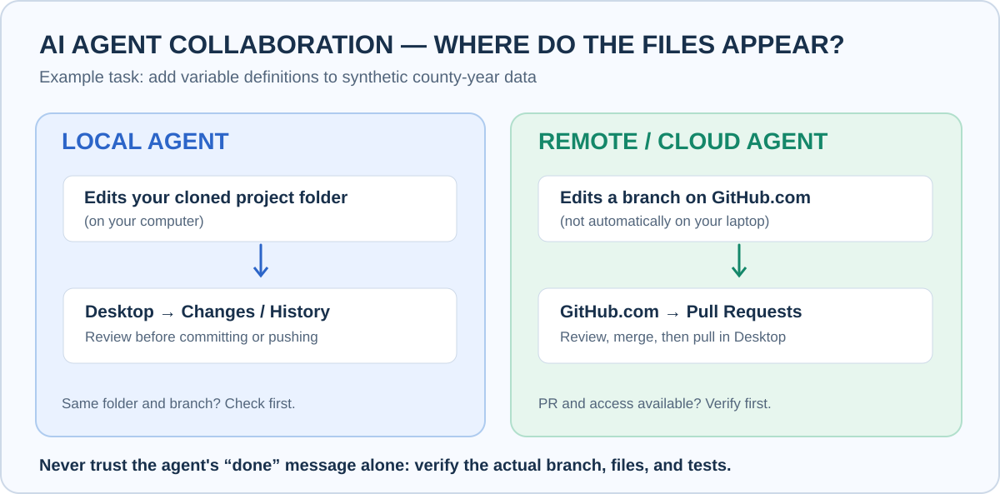

Lesson 7: Work with an AI assistant
You'll learn: how to let an AI assistant help with your project while you stay in control of what's accepted. Time: 20 minutes. You need: Lesson 5 (branches and pull requests).
The one idea
The AI proposes; you review; you decide. Treat an AI assistant like a new coauthor: give it a small, clear task, keep its work on a separate branch, and read every change before you accept it.
Which kind of assistant do you have?

| Your assistant… | Where its work appears | Follow | |
|---|---|---|---|
| Can only chat | Nowhere, until you paste its text into a file yourself | Part C | |
| Edits files on your computer (for example, an AI-enabled editor) | GitHub Desktop Changes | Part A | |
| Works on GitHub.com and opens pull requests | A pull request on GitHub.com | Part B |
Not sure? Ask it: "Can you edit files in my project, and where?" If it can't show you a changed file or a pull request link, treat it as chat-only.
Part A: An assistant that edits your folder
Local AI route. The dashed station is the step the AI does; every other step is you checking and accepting. Click the picture to step through it on the route map.
 Step 1: Make a branch for the AI
Step 1: Make a branch for the AI
 In GitHub Desktop
In GitHub Desktop
Do this: pull the latest main, then Current Branch → New branch, for example agent/data-dictionary.
You'll see: main is now protected from the AI's edits.
Step 2: Point the AI at the exact folder and give a small task
 In your project folder
In your project folder
Do this: use Repository → Show in Finder / Show in Explorer to find the folder, and open that same folder in your AI tool. Then give it a task with clear limits (see the instruction to copy, below).
Watch out: Ask the AI to tell you its folder and branch before it edits. If it names a different folder, stop: it's working on another copy.
 Step 3: The AI edits
Step 3: The AI edits
 Done by the AI assistant
Done by the AI assistant
Do this: let it work. Ask it not to commit or push, so you can review first.
 Step 4: Review every change
Step 4: Review every change
 In GitHub Desktop
In GitHub Desktop
Do this: open Changes and click through every file.
You'll see: only the files you allowed.
Step 5: Check the result yourself
 In your project folder
In your project folder
Do this: open the edited file and read it. Recheck any numbers and click any links.
 Step 6: Commit, publish, and accept through a pull request
Step 6: Commit, publish, and accept through a pull request
 In GitHub Desktop
In GitHub Desktop
Do this: Commit to agent/data-dictionary, Publish branch, then Preview Pull Request → Create pull request. Read Files changed once more, merge, and pull main (as in Lesson 5).
Part B: An assistant that works on GitHub.com
Cloud AI route. Almost everything happens on GitHub.com; your folder only changes when you pull at the end. Click the picture to step through it on the route map.
Some assistants connect to GitHub and open pull requests by themselves. What's available depends on the product, your plan and the project's permissions.
Step 1: Write a clear Issue
 On GitHub.com
On GitHub.com
Do this: Issues → New issue. Describe one goal, which files it may change, what it must not change (for example the data file and main), and how you'll check the result.
Step 2: The AI opens a pull request
 Done by the AI assistant
Done by the AI assistant
Do this: assign the Issue to the AI if your service supports that, or ask your connected assistant to work on a new branch and open a draft pull request.
maindirectly.
 Step 3: Check the pull request really exists
Step 3: Check the pull request really exists
 On GitHub.com
On GitHub.com
Do this: open Pull requests, find it, and read Files changed for every file.
Step 4: Look at it on your computer (optional)
 In GitHub Desktop
In GitHub Desktop
Do this: in Desktop, Current Branch → Pull Requests, pick the AI's pull request, and open the files in your editor.
 Step 5: Ask for fixes, or merge
Step 5: Ask for fixes, or merge
 On GitHub.com
On GitHub.com
Do this: comment with exact file names and what to change. When it's right, Merge pull request.
 Step 6: Update your folder
Step 6: Update your folder
 In GitHub Desktop
In GitHub Desktop
Do this: Current Branch → main, Fetch origin, Pull origin. The AI's work never appears in your folder until you pull.
Part C: A chat-only assistant
 Paste, review, commit
Paste, review, commit
 In your project folder
In your project folder
Do this: ask for the text, paste it into your file, save, then review it in Desktop's Changes and commit it yourself, exactly as in Lesson 4.
An instruction you can copy
Please add a short data dictionary explaining my variables and their units. Only edit
data_dictionary.md. Do not change the CSV ormain. Work on the branchagent/data-dictionaryif you can edit files. Tell me exactly which files you changed and what you checked. Do not merge anything. If you can't edit files, give me the text to paste myself.
More ready-made instructions: AI prompt library.
Before you merge an AI's work
| Check | Look at | |
|---|---|---|
| Only the files you allowed changed | Desktop Changes, or Files changed on the PR | |
| Nothing important was deleted or renamed | The file list in the diff | |
| The numbers and facts are right | Open the files and recheck them yourself | |
| No passwords or private data were added | The diff | |
| You, not the AI, click Merge | The pull request page |
A real example
In this repository, Issue #3 asked for variable definitions and a check of two calculations in a made-up economics dataset. An AI assistant (ChatGPT, using authorized GitHub tools) opened Pull Request #4, which a human reviewed and merged. Notice in Files changed that four documentation files changed and the data file did not, and that the results describe 5.0% → 4.5% as 0.5 percentage points, not 0.5%.
Check yourself
The AI says "All done!" but Desktop shows no changes. What now?
Ask for evidence: which folder, which branch, which pull request link. A cloud assistant's work appears as a pull request on GitHub.com, not in your folder.